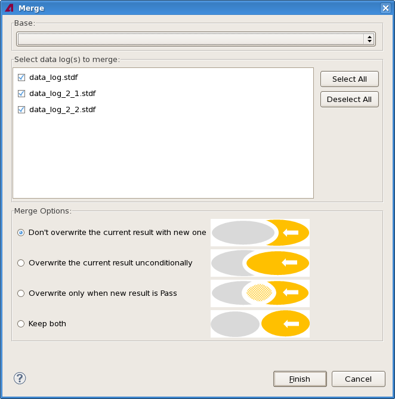

Merging data logs
Two or more data logs are merged using the Merge shortcut menu command in the Data Log Explorer view. You can specify the way conflicting records - where log entries with the same device ID are found in more than one data log - are handled.
About this task
Merging data logs removes the source data logs from the data store, replacing them with the merged log.
Merge data logs when you want to combine multiple logs into one, for example, if you have retested a lot and want to examine the original test and the retest together.
Before you begin
Make sure that all data log files you want to merge are loaded into the Data Log Explorer.
Procedures
Standard procedure
- In the Data Log Explorer view, right-clicke of the data logs that you want to merge and
choose Merge from the shortcut menu. (You can also select multiple files.
This results in a slightly different procedure described in Merging by selecting multiple
logs, below.)
The Merge dialog opens:
The Select data log(s) to merge list contains all loaded data logs.
- Check all other data stores you want to merge with the selected log (shown in the
Base section at the top and grayed out in the list).
You cannot merge the system data stream or correlation data logs.
- In the Merge Options section of the dialog, choose how you want SmarTest to handle
conflicts.
A conflict occurs when records in two or more of the data logs have the same device ID. All rows that do not have a device ID (displayed as ***) are considered to belong to the same device.
Depending on the option you choose, SmarTest handles these conflicts differently:
- Do not overwrite the current result with new one: The records from the first data log in which one of the duplicates occurred are kept.
- Overwrite the current result unconditionally: The records from the last data log in which one of the duplicates occurred are kept.
- Overwrite only when the new result is Pass: The records from the first data log in which one of the duplicates occurred are kept, unless one of the other records contains a "pass" result. In that case, the passing record is kept. (If there are multiple passing records, the one from the last data log is kept.)
- Keep both: The conflict is not resolved and all conflicting records
are kept in the merge result.
The action SmarTest takes always affects all devices with a conflicting ID. For example, with the first option, all test with the conflicting ID found in the second data store are dropped.
For purposes of handling merging conflicts, shmoo tests are always considered to have a pass result.
- Click Finish.
Merging by selecting multiple logs
Instead of first selecting the base log in the Data Log Explorer view and then the other logs to merge in the Merge dialog, you can also select all logs you want to merge in the explorer.
The result of this merge process is the same as with the standard procedure, only the beginning is different.
- In the Data Log Explorer view, select all data logs that you want to merge.
You cannot merge the system data stream or correlation data logs.
- Right-clicke of the selected logs and choose Merge from the
shortcut menu.
The Merge dialog opens:

The Select data log(s) to merge list contains all data logs selected in step 1.
- Select the desired base file from the Base list.
The list contains all selected files. The selected file is grayed out in the Select data log(s) to merge list to indicate that it cannot be deselected.
- In the Select data log(s) to merge list, select all files that you want to merge with the base file and deselect the others.
- Continue with step 3 of the standard procedure, above.
Results
SmarTest adds the contents from the data logs selected in step 2 to the one selected in step 3. It unloads the data logs from step 2 and appends "(Merged)" to the name of the first data log. (This does not affect the data log files on disk.)
If records with the same device ID are contained in more than one of the source data stores, they are handled according to the merge options you have chosen.
Example
Source data log 1:
Test name Device ID Value P/F A P1.1 0.1 P B P1.1 0.2 F C P1.1 0.3 F D P1.2 0.4 P
Source data log 2:
Test name Device ID Value A P1.1 0.5 F B P1.1 0.6 P C P1.1 0.7 F D P1.3 0.8 F
Merged data log with Do not overwrite the current result with new one option:
Test name Device ID Value P/F A P1.1 0.1 P B P1.1 0.2 F C P1.1 0.3 F D P1.2 0.4 P D P1.3 0.8 F
Merged data log with Overwrite the current result unconditionally option:
Test name Device ID Value P/F A P1.1 0.5 F B P1.1 0.6 P C P1.1 0.7 F D P1.2 0.4 P D P1.3 0.8 F
Merged data log with Overwrite only when the new result is Pass option:
Test name Device ID Value P/F A P1.1 0.1 P B P1.1 0.6 P C P1.1 0.3 F D P1.2 0.4 P D P1.3 0.8 F
Merged data log with Keep both option:
Test name Device ID Value P/F A P1.1 0.1 P B P1.1 0.2 F C P1.1 0.3 F D P1.2 0.4 P A P1.1 0.5 F B P1.1 0.6 P C P1.1 0.7 F D P1.3 0.8 F
What to do next
Functional changes
- Introduced in SmarTest 7.2.0
- SmarTest 7.2.1: Correlation data logs can no longer be merged.
- SmarTest 7.2.2: All files to be merged can now be selected before opening the dialog.